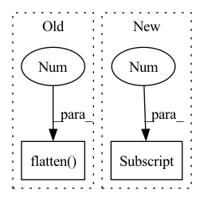

Pattern ID :797
Before Change
combined = self.norm_1(combined)
cls_token, _ = self.attn(combined[:,:1], combined, combined, need_weights=False)
cls_token = torch.flatten( cls_token, 1 ) // (N, 1, C) -> (N, C)
cls_token = cls_token + self.drop_path(cls_token * self.layer_scale_1)
cls_token = self.norm_2(cls_token)
After Change
// attention pooling. q = cls_token. k = v = (cls_token, x)
out = self.norm_1(out)
out = self.attn(out[:,:1], out, out, need_weights=False)[0]
cls_token = cls_token + self.drop_path(out * self.layer_scale_1) // residual + layer scale + dropout
// mlp
out = self.norm_2(cls_token)In pattern: SUPERPATTERN
Frequency: 3
Non-data size: 2
Instances Fragment ID: 2553580
Project Name: gau-nernst/vision-toolbox
Commit Name: 9c33936b15da329b7d51d981196aca20d5e00077
Time: 2022-03-04
Author: gau.nernst@yahoo.com.sg
File Name: vision_toolbox/backbones/patchconvnet.py
M Class Name: AttentionPooling
N Class Name: AttentionPooling
M Method Name: forward(2)
N Method Name: forward(2)
M Parent Class: nn.Module
N Parent Class: nn.Module
M File Name: vision_toolbox/backbones/patchconvnet.py
N File Name: vision_toolbox/backbones/patchconvnet.py
M Start Line: 119
M End Line: 132
N Start Line: 141
N End Line: 151
Before Change
self.final_procecss = final_process
def forward(self, input: t.Tensor, additional=None):
x = t.flatten( input, 2 , -1)
raw, rel = [], []
for i in range(self.att_num - 1):
x, re, ra = self.layers["attention_{}".format(i)](x)
x = self.layers["tconv_{}".format(i)](x)After Change
raw.append(ra)
if additional is not None:
additional = t.cat([t.unsqueeze(additional, dim=1)] * x.shape[1] , dim=1)
x = t.cat((x, additional), dim=2)
for i in range(self.fc_num):
x = self.layers["fc_{}".format(i)](x) Fragment ID: 2553578
Project Name: iffix/machin
Commit Name: afd28b6f8aec78ee14891633a07c0bedcecf303c
Time: 2020-04-19
Author: hanhanmumuqq@163.com
File Name: models/base/tcdnnet.py
M Class Name: TCDNNet
N Class Name: TCDNNet
M Method Name: forward(5)
N Method Name: forward(3)
M Parent Class: nn.Module
N Parent Class: nn.Module
M File Name: models/base/tcdnnet.py
N File Name: models/base/tcdnnet.py
M Start Line: 131
M End Line: 146
N Start Line: 142
N End Line: 177
Before Change
assert query_embed is not None
// prepare input for decoder
src_flatten = srcs.flatten(2 ) .transpose(1, 2) // [Batch, Patches, HiddenDim]
pos_embed_flatten = pos_embeds.flatten(2).transpose(1, 2) // [Batch, Patches, HiddenDim]
bs, _, c = src_flatten.shapeAfter Change
srcs[idx] = srcs[idx].flatten(2).transpose(1, 2)
pos[idx] = pos[idx].flatten(2).transpose(1, 2)
bs, _, c = srcs[0] .shape
query_embed, tgt = torch.split(query_embed, c, dim=1) // Tgt in contrast to detr not zeros, but learnable
query_embed = query_embed.unsqueeze(0).expand(bs, -1, -1)
tgt = tgt.unsqueeze(0).expand(bs, -1, -1) Fragment ID: 2553579
Project Name: bwittmann/transoar
Commit Name: b13e8b2db58100e624031db6b1f256e65dd68a87
Time: 2022-05-07
Author: bastian.wittmann@tum.de
File Name: transoar/models/necks/focused_decoder.py
M Class Name: FocusedDecoder
N Class Name: FocusedDecoder
M Method Name: forward(4)
N Method Name: forward(4)
M Parent Class: nn.Module
N Parent Class: nn.Module
M File Name: transoar/models/necks/focused_decoder.py
N File Name: transoar/models/necks/focused_decoder.py
M Start Line: 105
M End Line: 108
N Start Line: 105
N End Line: 109